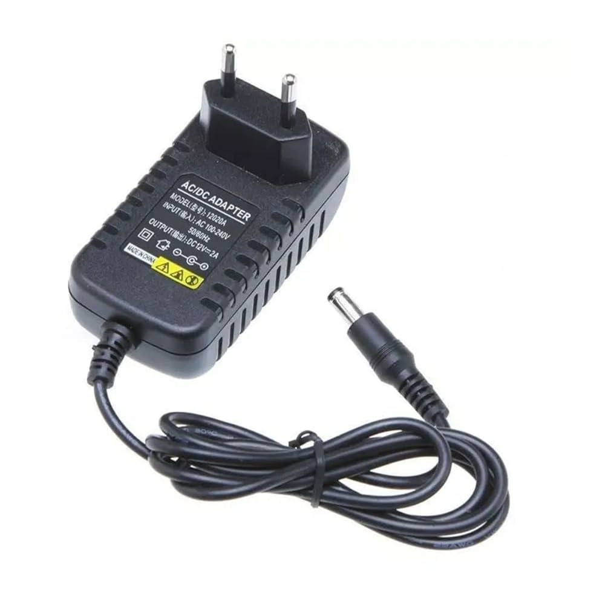
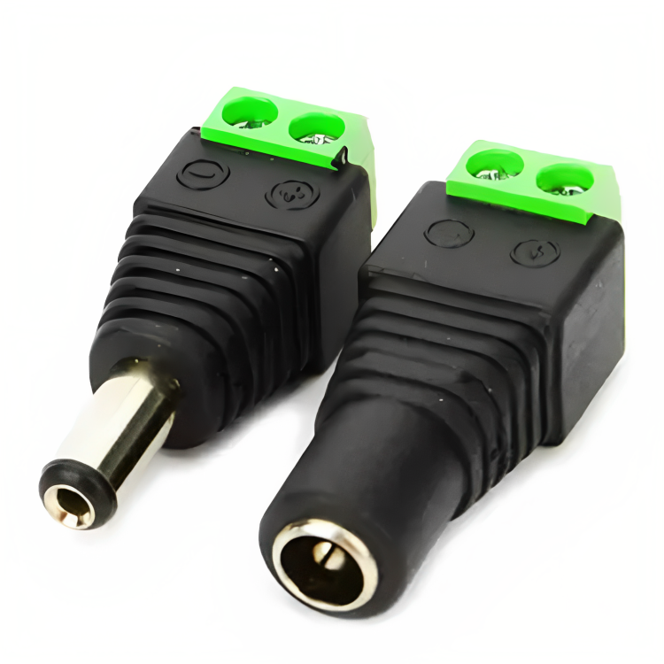

Fonte DC (Corrente Contínua)
Definição: A Fonte DC é um dispositivo que fornece energia elétrica contínua, essencial para muitos dispositivos eletrônicos.
Funcionamento
Ela converte a corrente alternada (AC) da rede elétrica em corrente contínua (DC) através de processos como retificação, filtragem e regulação.
Importância e Aplicações
- Carregadores de celular
- Computadores e laptops
- Câmeras de segurança
- Robôs e drones
Tipos de Fontes DC
Fontes lineares e fontes chaveadas (switching), sendo essas últimas mais eficientes.
Preços
- Fonte de 12V para câmeras: R$ 45,00
- Fonte de 5V para USB: R$ 30,00
Plug P4
Definição: O Plug P4 é um conector de áudio utilizado principalmente em fones de ouvido e microfones.
Características
O plug P4 possui três partes: Ponta (Tip), Anel (Ring) e Manga (Sleeve), sendo usado para transmitir sinais de áudio mono ou estéreo.
Importância e Aplicações
- Fones de ouvido
- Microfones
- Pedais de guitarra
Preços
- Plug P4 estéreo (3,5mm): R$ 10,00 - R$ 25,00
- Cabo com plug P4: R$ 30,00 - R$ 80,00